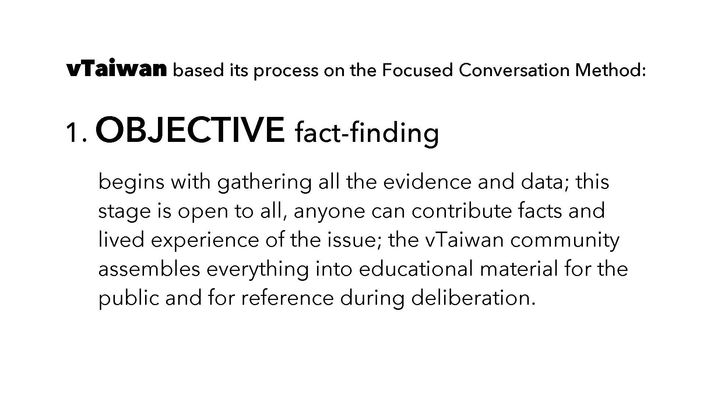

Participating in Public: Municipal Software for Online Dialogue and Decision-Making
I wrote a novel about software developers and included a government website called Decide Portland. This is set around twenty years from now, but that website isn’t really science fiction. I based it on open source software created by employees of the City of Madrid. Anyone in the city can use Decide Madrid to debate what they want to see happen in their neighborhoods, to draft proposals, read and comment on the city’s own draft legislation, and to allocate one hundred million euros each year toward projects throughout Madrid. And any government can adapt that software.

We’ll learn how this process came to be, how the platform works, the challenges encountered in its use, and the solutions being explored. We’ll also discover how a large group of people arrive at a common understanding online and provide qualitative data for policymakers. Many here will already be familiar with government websites but we’ll look specifically at the ways people connect with decision-makers in three countries: Iceland, Spain, and Taiwan. They all use software for public engagement. In each country, a government official upon election and from within the administration catalyzed its use. This journey through the development of digital tools for democracy will give us an idea how participatory political processes might be introduced to local and state governments in the US.
First, we go to Iceland. The year is 2008.
A cozy elite crashed the banks and the depression severed people’s trust in institutional leaders. To help during the crisis, an internet entrepreneur who’d left Reykjavík to work in the UK video game industry returned home. Róbert Bjarnason and friends created an online platform for all the parties in parliament to post their proposed laws and for citizens to comment on them and to post their own. It was called Shadow Parliament.
The city of Reykjavík is near parliament and a popular comedian talked his friends into running a satiric political party for the municipal elections. Jón Gnarr had everyone’s attention and the campaign became the subject of documentary film.
But he had no experience with public administration. Gnarr later went on the record saying he hadn't even paid attention to local politics before running for mayor. And so when Bjarnason launched a website for people to make proposals for what they wanted to see happen in the city, Gnarr asked everyone to contribute and they were very active on that platform.

Unlike politicians who declare missions and plans, Gnarr had no policy, no real party, the Best Party was just a bunch of creative people (and political scientist Heiða Kristin Helgadóttir). They said write us your policy and we'll use that—and then they won the election. With Jón Gnarr the mayor, October 2011, the city integrated the participation platform into a formal process for people to communicate with government. Each month the most discussed issues were taken up by the city council.
And even after the Best Party's term ended and Gnarr left politics, the software and participatory process is still in use and supported by Citizens Foundation, a nonprofit co-founded by Bjarnason.
The Best Party inspired people. Other people in Europe undergoing crisis, many admired how Reykjavík replaced a corrupt class of politicians. They saw the potential for real democracy.
In 2011, almost five million people were without work in Spain, with youth unemployment at forty-three percent. The public bailout of the banks and cuts to social programs. Austerity. Corruption. Crisis. The authorities told a group of protesters in Madrid to leave the public square. The protest had been declared illegal. And people surprised them, they filled the plazas. The day Madrid showed up, May 15th 2011, many months before Occupy Wall Street. The prolonged protests became known for that day, 15-M.
At first, this wasn’t about occupying an office. And even now, looking back at the spread of Occupy throughout the world, that was only a beginning. The organizers of protests see people turn up and eventually even the most dedicated leave. The protests ends. And more effort appears to have gone toward protesting than attaining a seat of authority where policy will be written. Some might say the political process is corrupt and to participate is only to legitimize it, but protesters in Spain organized themselves. They began to understand electoral politics was only another game. They could play it.
The 15-M movement evolved into new political parties. Foremost among them, Podemos, formed a coalition with other political parties under the name Ahora Madrid. And they promised to create a website to facilitate public participation with city hall. Their candidate for mayor promoted this and after winning office in 2015, Mayor Manuela Carmena ensured the financial, political, and managerial support to develop and run the platform.

It wasn’t required by law, the city council decided that the results of polls and participatory budgets were binding, and the adoption of these results was only ensured by the Mayor’s Office.
When their candidates won, the things that had been so hard to advance suddenly happened fast inside government. Decide Madrid. The platform had a social movement behind it. Another member of Ahora Madrid, a software developer elected to city council, Pablo Soto, helped create the software.

Now available at consulproject.org, the platform has since been adapted by more than a hundred governments in thirty-three countries. This is free and open source. It’s possible to imagine a group of civic-minded volunteers anywhere in the world could set this up in their own city, but the success of this software depends upon a commitment within government to involve the public. It depends upon public servants to enable it and engage with people. A culture of civic involvement. A will to share power, to work together, to decide together: a desire for democracy.
In both Madrid and Rekjavík, the software for open engagement became integrated to official political processes when enlightened outsiders who valued public participation entered elected office.
Róbert Bjarnason of Citizens Foundation in Iceland consulted with the City of Madrid about technical issues at the beginning of the initiative. And both Better Reykjavík and Decide Madrid have some similarities. Each city facilitates a participatory budgeting process online.
Some of the discretionary budget that previously would’ve been allotted by politicians, now draws from the collective desires of people in the city. In Madrid, almost all participatory activities can also be done offline in any of twenty-six city offices. The proposals, comments, votes, all of these data can be thought of as items that a platform displays. Both platforms list the items, and when the process calls for it, they aggregate votes. These are the things. Yes or no. These platforms don’t support a complex deliberative process. The technology alone doesn’t provide the structure for a large group of people to think through a complex issue together. The websites created in Madrid and Reykjavík have some interactive features and as in life, some challenges.
1.) Trolling, 2.) Information overload, 3.) Thresholds for reaching the council, 4.) Proposals stuck in committee, and 5.) Demands on resources and time.
1. Trolls
The Icelandic developers scuttled their trolls by design. People may have complex feelings about a project, although, even if it is nuanced, people must sort their comments into either pro or con. The comments appear in two columns, side by side on desktop, and for the small screen, a single column alternates pro and con.
Readers vote the comments up or down. Each must be complete unto itself to make any sense. This short circuits the ability to attach attacks to another person’s statement and the design allows people to curate the forum, bringing the most relevant comments up to the top for other people encountering the project.
And to increase access to the platform on smartphones, people can use speech-to-text. You can even click a button on the page to record a brief audio or video.
2. Information Overload
And this leads to another challenge, one that could be considered a luxury problem, but one that a city with a much larger population like Madrid encounters. The sheer number of proposals submitted in a city of three million people just buries them. It would be unusual for someone to read a thousand proposals. And even if people can vote proposals up or down, in theory surfacing the worthy ideas, it is still very unlikely for an individual to read hundreds of proposals and so those that have reached the top tend to get read first. They have search filters to select for the most recent, the most popular, the most debated proposals, or to select them at random. Imagine someone is really into it and after reading a hundred proposals, they’re done. They did good. But nine hundred proposals were never seen.
Someone going to Decide Madrid will find items across the menu bar representing four actions people can take: debates, initiatives, consultations, and budgeting. On the menu bar, in Spanish, the propuestas and votaciones are both part of the initiatives process.
More actions gives people more ways to participate and allows them to use the site throughout the year, rather than only once for participatory budgeting. They may start with the easiest to understand, debates section, where people post comments about whatever they want and where elected officials can communicate directly with residents and the city can assess public opinion. Or a section requiring much more effort, the initiatives section, allows people to gather votes in support of actions for the city council to take. And the website includes a consultation process where citizens are asked to advise on draft legislation. Arriving at the site for the first time can be confusing. If it is too confusing, Decide Madrid risks losing people. Frustration with a process that has no effect upon the city is an even greater risk.
3. Threshold for Proposals
For an initiative to be considered by the city council, a proposal must receive votes in favor from one percent of residents in Madrid over sixteen years of age: a number of people currently around twenty-seven thousand. So if an individual goes to the effort of promoting an idea—say they want more street trees—and gathering support throughout the city, they receive twenty thousand votes. It requires work, resources. Imagine you posted a proposal on Facebook for the City of Portland to plant more street trees and it receives twenty thousand likes. You’re like a singer in The Decemberists!
Forget it, people don’t listen to The Decemberists in Madrid. Only two proposals have achieved the threshold required by the City of Madrid. This can cause a feeling of the thing being a waste of time for the individuals who create a proposal and for those who support it. Simply reading the initiatives and seeing a small number in support directly above the number needed to advance, that alone can discourage participation because the proposal—even with video and images that can be attached to support the idea—appears to face an insurmountable challenge. The threshold results from a law and is not a design decision. Some problems of the participatory process are legal. And this highlights the importance of cultural and political support for participatory democracy.
4. Proposals Stuck
If the culture at large advances the idea that people can be well-informed and offer their professional expertise and lived experience, and if supporting institutions establish processes for collaboration, then a collective intelligence may emerge. And yet, even when ideas can advance to the city council, we again encounter the overwhelming number of ideas these platforms collect.
Better Rekjavík had brought the most-discussed ideas in its forum, Your Voice at the City Council, to be considered by the councilors. Over the years, beginning with Jón Gnarr and the Best Party, the city accepted more than two hundred ideas brought to their attention by citizens. But with over four hundred ideas stuck in committee, that feature hasn’t been promoted for the last three years.
5. Managing Resources
The resources needed for a city to facilitate participation can be a barrier. Even though the software is free, it costs money for public employees to set up the platform and maintain engagement. The number of proposals in participatory budgeting that have to be checked by officials, vetted, priced. For the City of Rejkjavík it is an eighteen to twenty month long process from beginning to end. The proposals must fit the budget, be doable, legal, and comply with the planning of the area. The projects are implemented on city land. As a way of reminding people that all proposals are to be made in the public interest, the proposals themselves become public property. And an initial idea can change considerably with more insight from other participants.
The platform helps with transparency, a single place for everyone to see all the proposals. The digital tools are there to help people, but they’re not the process itself. In each round of budgeting residents allocate 3.2 million euros on city projects in Reykjavík. And to focus on serving them, the city decided participatory budgeting going forward will happen every other year rather than annually. In a large city, a participation platform can place a strain on public staff and IT. The website could be likened to a bottomless suggestion box. But all those suggestions represent the concerns and interests of real people. And for everyone to continue participating, all those people need to know they’ve been heard.
Success and Solutions
The opportunity to allocate millions of dollars makes people think about their neighborhood. It is a significant move toward greater civic engagement. Websites for collecting ideas have been successful with participatory budgeting. With the financial incentive, clear timelines, defined responsibilities, and shared goals: this collaborative work succeeds. And some cities in the US have started participatory budgeting. In 2018, New York City adapted the software created by Madrid, the same year the Consul software won the United Nations Public Service Award.
Online participation overcomes barriers of time and place, allowing more people to contribute at their own pace. Online, the city can harness the power of networks and bring a wider range of voices into dialogue. And yet in large urban centers a massive number of comments, proposals, and voting processes will demand a new design.
Software for natural language processing could group similar proposals by finding patterns and might discover those with greater complexity and possibly higher value contributions. In Madrid, designers expressed interest in the potential for software to connect individuals with matching projects, giving them the opportunity to further refine their proposals as a group and resubmit one to greater effect. And under development in Iceland, Róbert Bjarnason has machine learning and data visualization to help people make sense of all the proposals.
For people first encountering the website, potential confusion can be reduced by human-centered design. Storytelling helps too. Digidem, a civic tech nonprofit in Sweden, found newcomers were more willing to spend time with a participation platform created using the Consul software when they heard the history of its creation.
Hopefully, an enhanced version with natural language processing can solve for the large number of proposals from superusers, the replication of similar ideas, and, especially in the case of Decide Madrid, votes spread too thin for any proposal to advance. While all the proposals may be worthwhile, they tend to be small scale and a city still needs a way to work on larger issues. The website alone doesn’t include a process for the participants to first identify an issue of shared concern, arrive at a common understanding of the problem, then generate ideas for a solution.
Now, to introduce the digital democracy being created in Taiwan, two possible summaries of our story so far. In the first drama, our hero is the information: the city only lacks the data, the ideas, the knowledge that exits distributed among the inhabitants, and if it could access that expert knowledge and lived experience then elected leaders and public servants would produce better results. A real democracy.
A second story would have our protagonist be the method: the city doesn’t lack data, information, or knowledge, it has plenty of that. It doesn’t have a process to allow hundreds of thousands of people to reflect together upon an issue and arrive at a common understanding that can advance to policy and collective action.
Civic-minded developers, designers, and activists in Taiwan assembled a collaborative process for thinking together. They’d seen the protests happening around the world in late 2011. And in 2012, the civic hackers in Taiwan protested in their own way, creating improved open source versions of government webpages that could be freely adopted by public servants. They hosted the alternative pages with URLs differing from the original government site by one character, changing the o in the dot gov domain to zero.
Their first project transferred data from a difficult to understand hundred page PDF of the state budget into an interactive website with visual representation of government spending.
Anyone can zoom into topic areas and communicate with people there about issues they’re interested in. Public employees can address questions on the page. And years later, the national administration merged the open source software for its own use on more than thirteen hundred ministerial projects.
This demonstrates one way that civil society volunteers can improve a public service and have the government merge back their contributions for all to use. The civic volunteers organized gov-zero through collaborative processes for working together with a large group of people and creating the shared understanding needed to move forward on projects.
Sunflower Movement
Gov-zero was ready when crisis struck the island in 2014. An island nation emerging from decades of martial law. A young democracy, neighbor to the world’s largest authoritarian state.
In 2014, Taiwanese Members of Parliament refused to publicly deliberate the Cross-Strait Service and Trade Agreement. The MPs declared it an administrative issue. Observers saw the agreement would allow China control over strategic areas of Taiwan’s economy and young activists occupied the Parliament to negotiate the trade agreement. A demonstration.
To demonstrate a real democracy. For twenty-two days people occupied the Parliament, deliberating the trade service agreement.
Gov-zero supported the communications. They provided crowd transcription, the collection of written opinions and data visualization. They were ready with processes and digital tools to work together, connecting cameras and screens, projecting the debates to groups of nongovernmental organizations outside the building and to the nation. Gov-zero connected a half a million people through their process of collaboration and deliberation—with many more observing online.
The approval rating of the central administration was at nine percent. And the demonstration solved a crisis of legitimacy. Rather than diverge, rather than thinking of politics as a competition that divides people in half, people worked together over three weeks and they converged eventually on a set of specific demands, proposals that the head of parliament accepted. A success. A real democracy. After the demonstration, the mayors who opposed the occupy lost their elections. The candidates who supported the democratic process of the Sunflower Movement all won office.
vTaiwan
Volunteers worked with gov-zero and with the community to welcome government officials to participate. One minister who’d worked with tech companies prior to her administrative post recognized the value these volunteers could bring to government. Even among its own departments, government would benefit from improved collaborative communication.
Minister Jaclyn Tsai managed national policy on technology and coordinated cross-ministry issues. She saw a need to organize a process for rational deliberation.
At a December 2014 gov-zero hackathon, Minister Tsai asked if they could facilitate a process for the entire nation to deliberate issues, and she offered to reward their work with a binding commitment—government would address the concerns identified through the public process. In Taiwan, an official who knew how fast decisions could be made in a private company, and as with the elected leaders we saw in Iceland and Spain, for the participatory process to happen, there must be support from within government.
Volunteers accepted her challenge and created vTaiwan. A single letter preceding a familiar name makes it easy to find and remember, like how a gov-zero domain calls up an improved government webpage, the v is virtual. But the results are real.
The heart of the vTaiwan process is communication, it is an open multi-stakeholder consultation process. Fortunately, this isn’t expensive to run. The essential components are a dedicated location where civil society volunteers can meet regularly with public employees, and a commitment from the government to use the findings of the consultation process.
Based on the Focused Conversation Method, the deliberation happens in person and online.
The process begins when an issue of shared concern has the commitment of a government employee from the relevant agency. The commitment to act on their findings powers the all-volunteer process. People participate because they know their contribution will be heard. The issue can be submitted by an individual or group. It might arise in conversation over dinner at their weekly meeting space, the Social Innovation Lab. This can be thought of as problem identification. For people to think it through together, the issue must allow everyone to share common references. Issues too far in the past or the future introduce more layers of interpretation and the potential for wide divergence in understanding. Dealing with those problems, though possible, requires more extensive education, a potentially large expense when the group process can involve tens of thousands of people. The vTaiwan process works best for emerging issues, where the government doesn’t know what to do. If the policy has already been decided, then the consultation is less likely to be productive.
As the topic emerges and a government agency agrees to follow through, the group begins collecting facts. The first of four stages. The objective stage.

Anyone can contribute factual data. A survey goes online to ask people what they know and what they’ve experienced about the issue and who else they think might be a stakeholder. The vTaiwan volunteers continue sending the survey to more people, asking for more information. Facts. Data. All the evidence about an issue. Gathering facts that aren’t disputed by any party. The fact-finding creates a common reference and all this information can be placed on a shared document or wiki. The vTaiwan community assembles everything into educational materials for the public and for reference during deliberations. All specialized language goes into an online dictionary to clarify issue-related terms for the general public. Easy to understand. A common understanding of the facts. This work of collective education is the foundation for thinking together. The artifacts become social objects, common and shared points of reference that can be used by everyone throughout the entire process.
Next, vTaiwan invites people to express how they feel about the issue. Using open source software developed by a small team in Seattle, this survey happens over three weeks. The Pol.is software facilitates a process where people taking the survey can also create survey questions. People read a short statement and identify their sentiment as agree, disagree, or pass. After responding to a number of statements, they receive a prompt to contribute their own. The statements may also inspire an idea and the survey taker can write that. It goes into the survey for everyone to read and rate. There is no reply button. Not having a direct vector to an individual short circuits the trolls.
The software visualizes the respondents in opinion groups. It does data analysis of their responses, a form of unsupervised machine learning used to cluster similar things. And most importantly, the software surfaces the statements that all the divergent clusters agree on. People still compete, but they compete to create statements that the most people resonate with. The vTaiwan volunteers present this to their government partners: Here is the common understanding, is there something you can do? and if not, why?
Idea generation begins. The best ideas take care of most people’s feelings. They resonate with the values of all the different opinion groups. A small group of ministers and stakeholders discuss how to address the consensus statements. Point by point they respond. They meet together with professional facilitators in a room, live-streaming to an auditorium where another facilitator helps translate technical terms—and people also watch online, adding comments to a live chat—the audience can submit their concerns to be relayed back to the ministers. They focus on common values. The ideas become feasible because they're based on common goals and common feelings. This stage opens up creative responses, new ideas, or simply realizing how already existing policy might be applied. A suite of potential ideas exchanged between the ministers and the public in a deliberative process before the final stage. Narrowing down in the end, when the ideas have been handed over to lawmakers. The fourth stage is the decision-making by government.
The competition of political parties in electoral races had led people to believe democracy must be a showdown between opposing values, and the Sunflower Movement demonstrated that democracy is a conversation between diverse values. A collaboration across difference. A technologist and participant with this civil society movement, Audrey Tang, later became the country’s digital minister.
She stated that gov-zero benefited from seeing the other occupies around the world and also from the strong deliberative quality of the practices they’d been building between 2012 and 2014. The sharing of open data, turning data into social objects. Minister Tang often uses the term social object and this refers to an external point of reference used by people, such as words, facts, statistics, books, the things that allow us to share a common understanding of an issue. By creating an online resource of these social objects, the group, even an extremely large one, shares an agreed set of facts and evidence to identify the problem and begin a process of idea generation, solution seeking, and decision-making.
Beginning with the first consultation in 2015, this process has been used to create twenty-six pieces of national legislation. vTaiwan demonstrates how a society with different interests and desires can work together to generate ideas that government can advance into law. Their success requires listening to the concerns of people, reaching a common understanding, and building the social structure upon that foundation. And when working for some twenty-three million people, the digital minister of Taiwan has referred to this as “listening at scale.” Audrey Tang identifies three essential elements for any society to adopt this process. First is open government—making available the data and resources needed by journalists. Next she emphasizes narrative work, the storytelling that creates context for people to care and understand why a proposed budget or policy affects their lives. And third is the active collaboration of government with civil society in the co-creation of technology to make data and decision-making easy to understand and interact with.
Common Values
When English-language natives hear the word "consensus," they tend to think of people in agreement. Taiwan uses consensus to define their key performance indicators, but the word for consensus in Taiwan is Gòngshì, and the literal translation is common knowledge. It’s even more rough than rough consensus. It’s about mapping the issue, so people come to a common understanding they can live with. If we use the English definition of consensus, expecting that everyone agrees, that people could sign their name to the statement, of course we expect push back.
For issues that could divide society, vTaiwan uses contemporary tools to identify consensus statements from the wider public that can then facilitate deliberation and policy-making. To make sense of all the data derived from a multitude of statements about an issue, the Pol.is software does principal component analysis to create a 2D representation of responses to the survey. Next, the software dynamically groups people into opinion clusters. It’s a k-means clustering of people who feel similarly about each other’s statements. In the simplest terms, a recommendation engine, the recommendations that accrue with enough clicks on the items you and other people enjoy.
Responding to each statement, people can see their avatar on-screen move toward and away from clusters. They may disagree but those are not nameless enemies. Pol.is creates a visualization of the survey data displaying small profile pics, including friends and family, all the participants in the area and they are all over the board. With the commitment from government to address their concerns, people participate. And by involving people early, the policy enjoys better understanding, acceptance, and a greater chance of success.

Rather than simplify a complex issue into a yes no question after all the legalese has been decided, vTaiwan brings people into the policy-making process. And instead of asking people to comment on a policy document, they involve everyone with the why of policy. When a technical document shuttles out, it can shut people out of discussions—specialist language often delineates in and out groups—but if a very specific issue has been clarified and they are all asked how they feel, that interaction and the resulting data creates valuable input for the later deliberative process of idea generation and decision-making.
The process generates a common understanding of a specific issue. The vTaiwan volunteers have created space for people to learn from each other without being burdened by harassment. It’s not that everyone thinks the same or all have the same values; the data analysis identifies values that span differences. Statements that reflect the values of all the different viewpoints. Common values allow for trust. By trusting each other, they can think through difficult issues together. Accessing expert knowledge that exists in a large population and using social technology to create a collective intelligence. The technology assists people, it helps them make sense of the massive amount of qualitative responses and create higher quality policy for all. Laws that people can live with, so people can better live with each other.
Join
Digital Minister Audrey Tang participates with the global civic tech community. In a 2019 interview with Chilean participatory democracy organizer Tomás González Olavarría, the minister mentions both Decide Madrid and Better Reykjavík as resources for Taiwan’s national participation platform.
The Join platform has multiple systems rolled into a single portal. Residents can do municipal participatory budgeting there and also oversee the key performance indicators of the budget and government spending. They can make comments and get public responses. Join also features regulatory pre-announcement and a petition platform. Many features in a single website allows the software to make recommendations: If you petition for this, you might want to review that regulation and things like that. This national multi-purpose platform serves the public and various different civil society organizations through its many functions.
Minister Tang records and publishes transcripts of her meetings, making the study of this work much easier. From a recent talk with journalist Rana Foroohar, it sounds like Join has some of the enhancements currently being explored for Decide Madrid and Better Reykjavík.
Meaningful participation is power: to decide budgets, to shape policy. So why would authorities concede power to the public when making significant decisions? After a crisis, the participatory process came to Iceland, Spain, and Taiwan. The process became integrated into the government to restore legitimacy, representation, trust. But as time passes, another door opens, the process has been proven in other jurisdictions and people aware of this who are already in office have the authority to introduce it internally.
A shared identity and shared purpose, along with all the resources for people to think through an issue together and arrive at a common understanding that can advance to binding legislation. This evolution of democratic practice is happening around the world, and here, in the United States, the advances are most likely in places where people can imagine themselves working together, sharing an identity and purpose. The place where they live and the structures that support their lives.
To have this collective intelligence, Audrey Tang often leads by saying that broadband is a human right in Taiwan—and in a rural or urban area it is possible to do this, creating municipal broadband, to provide the necessary infrastructure for contemporary life just as we would for water and electricity—but before people can participate in their democracy online, a society must provide itself with the basic infrastructure of support: food, clothing, housing, education and healthcare. To communicate across difference, to acknowledge others. It is possible to trust each other, to work together, but it is a choice, it is supported by the story we tell ourselves about what it means to be human and to live in society.
Social technology is more than machines. Our government with its rules and procedures and stories creates structure for a great number of people to work together. Our machines even depend upon the minerals and metals of the earth. Dependent upon nature. It requires a culture of care, a recognition of interconnection. Nurtured by a culture of dialogue and deliberation: listening, empathy, and care.
When people don’t agree, when we have different needs, we can find shared values. This is a long process, an issue working its way through the vTaiwan consultation process can require three months, a year, each issue has its own challenges and timeline. We are creating a culture of dialogue and deliberation. Disagreement, yes, but default to collaboration rather than confrontation. To communicate amid conflict. Empathy is the emotional strength to deal with another’s reality. Love increases empathy in the human being. In community with each other and the world. We can participate by collecting ideas from each other: individual contributors, with many purposes. And we can participate as a collective intelligence: people working together with shared purpose. Our technology can assist us, it won’t automate the work or replace the need for human intelligence.

In my novel I model economic systems in fictional software, the antagonist software is predatory, extracting wealth from the community and concentrating it in the hands of a few people. But that isn’t fiction. The protagonist software imagines how people can work together, creating value online and sharing it fairly. It’s not impossible. The story deals with the different worldviews and values that uphold those systems. How ideology, including racism, has been and is used to extract wealth. When a few individuals with the most money have the most access to power, ordinary people have power in solidarity. Democracy is not what we have, democracy is an action. We have to do it.
For more information:
GNARR! How I Became the Mayor of a Large City in Iceland and Changed the World, a book by Jón Gnarr
“Post-crisis Iceland: we have been living a lie but we were able to break it,” a deep look at the political process for rewriting the rules of democracy—and Better Reykjavík
“Updating Democracy: The Citizens Foundation,” in this interview, Róbert Bjarnason shares his views about democracy in the 21st century
“Online Participatory Budgeting in Reykjavik: making democracy easier and more fun,” a survey of the history and process
“Citizens Foundation has also set up an American nonprofit group called Citizens Foundation America, which is being led by Oregon-based Joshua Lanthier-Welch as it works to bring the platform to more of this country.”
“This is How People Power Wins an Election, The Story of Ahora Madrid”
Pablo Soto: “We challenged a whole system of representation in which a few people have 100% power of decision for years, without having to explain or allow citizens to participate.”
“By placing all these civic processes into one software platform, Madrid reduces the costs of organizing for government, and streamlines participation for users. Over 400,000 of Madrid’s 3 million residents have accounts, making it the largest system of its kind in the world - and the most impactful.”
“vTaiwan: Public Participation Methods on the Cyberpunk Frontier of Democracy”
“What vTaiwan Teaches Us About Digital Democracy”
“Next-Generation Engagement Platforms, and How They Are Useful Right Now”
Digital Minister Audrey Tang in conversation with US-based tech workers who are new to vTaiwan —
PDIS: Public Digital Innovation Space, VIDEO
VIDEO “Government by the people, with the people,” a conversation with Audrey Tang and Beth Noveck for the Future of Democracy series — The GovLab, VIDEO
SayIt transcriptions of talks by Audrey Tang, for example her talk with Beth Noveck for the Future of Democracy
Digital Government: Research and Practice, editor-in-chief: Beth Simone Noveck and Soon Ae Chun
CrowdLaw for Congress: Strategies for 21st Century Lawmaking